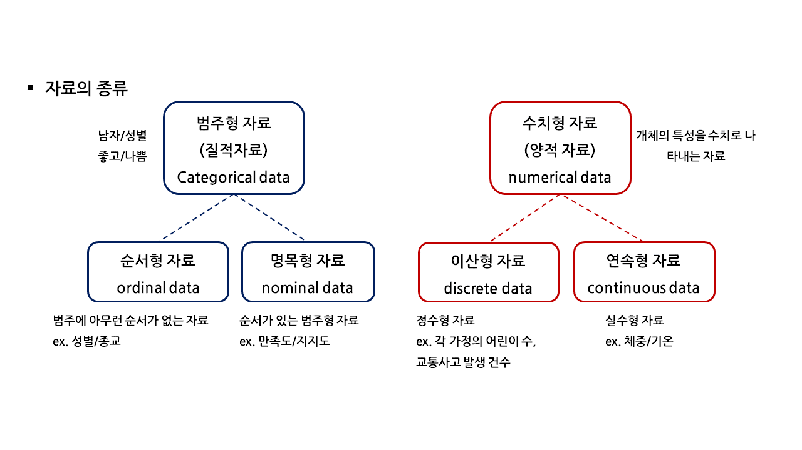

3.2. 데이터프레임의 요약#
이 절에서는 데이터프레임으로 저장된 데이터로부터 나열된 값을 요약하여 새로운 정보를 생성하는 방법을 배운다. 살펴볼 내용은 다음과 같다.
열에 대한 요약 통계
해당 연도 요약 통계
해당 시군구 요약 통계
외부 파일로 저장
먼저 자료의 형태에 대해 알아야 한다. 자료는 크게 ‘범주형 자료’와 ‘수치형 자료’로 분류할 수 있다.

화재출동 데이터를 위의 기준에 따라 분류해보면 어떻게 될까?
접기/펼치기
명목형 자료: 시군구
순서형 자료: 화재발생연도
이산형 자료: 사망자수, 출동횟수
연속형 자료: 재산피해금액
화재출동 데이터#
먼저 실습할 데이터를 불러오자. 실습 데이터는 화재출동 데이터(fire_calling_summary.csv)이다. 화재출동 데이터는 2017년부터 2021년의 5년간 서울시 5개 구별 (강동구, 강서구, 강남구, 강북구, 관악구) 자료를 담고 있다.
import pandas as pd
df = pd.read_csv("../../data/fire_calling_summary.csv", encoding = 'cp949')
df
| 화재발생연도 | 시군구 | 사망자수 | 재산피해금액 | 출동횟수 | |
|---|---|---|---|---|---|
| 0 | 2017 | 강남구 | 0.0 | 1565258 | 502 |
| 1 | 2017 | 강동구 | 0.0 | 418593 | 269 |
| 2 | 2017 | 강북구 | 0.0 | 339146 | 186 |
| 3 | 2017 | 강서구 | 3.0 | 706871 | 364 |
| 4 | 2017 | 관악구 | 3.0 | 654690 | 286 |
| 5 | 2018 | 강남구 | 0.0 | 1624983 | 436 |
| 6 | 2018 | 강동구 | 4.0 | 540625 | 324 |
| 7 | 2018 | 강북구 | 4.0 | 216838 | 203 |
| 8 | 2018 | 강서구 | 2.0 | 393401 | 383 |
| 9 | 2018 | 관악구 | 1.0 | 816562 | 337 |
| 10 | 2019 | 강남구 | 1.0 | 1677681 | 456 |
| 11 | 2019 | 강동구 | 1.0 | 533359 | 254 |
| 12 | 2019 | 강북구 | 1.0 | 217805 | 167 |
| 13 | 2019 | 강서구 | 0.0 | 666297 | 331 |
| 14 | 2019 | 관악구 | 3.0 | 654586 | 311 |
| 15 | 2020 | 강남구 | 1.0 | 1451556 | 387 |
| 16 | 2020 | 강동구 | 3.0 | 363839 | 221 |
| 17 | 2020 | 강북구 | 1.0 | 208380 | 186 |
| 18 | 2020 | 강서구 | 3.0 | 200966 | 212 |
| 19 | 2020 | 관악구 | 2.0 | 646149 | 219 |
| 20 | 2021 | 강남구 | 2.0 | 1354949 | 391 |
| 21 | 2021 | 강동구 | 1.0 | 346741 | 211 |
| 22 | 2021 | 강북구 | 5.0 | 410205 | 146 |
| 23 | 2021 | 강서구 | 2.0 | 559614 | 223 |
| 24 | 2021 | 관악구 | 2.0 | 562294 | 259 |
열의 요약 통계#
데이터 프레임은 행(row)과 열(column)로 이루어져 있다. 행은 관측치라고도 부르며, 각 관측치의 측정된 정보가 해당 열 위치에 기술되어 있다. 따라서 데이터는 각 열을 기준으로 요약하며, 이 절에서도 열(column)의 평균, 표준편차, 최댓값/최솟값, 분위수 등 요약된 수치들을 출력한다. 이러한 요약된 수치들을 통계량이라고도 부른다.
전체 데이터를 요약하는 메소드는 describe이다.
df.describe()
| 화재발생연도 | 사망자수 | 재산피해금액 | 출동횟수 | |
|---|---|---|---|---|
| count | 25.000000 | 25.000000 | 2.500000e+01 | 25.00000 |
| mean | 2019.000000 | 1.800000 | 6.852555e+05 | 290.56000 |
| std | 1.443376 | 1.414214 | 4.674389e+05 | 97.34521 |
| min | 2017.000000 | 0.000000 | 2.009660e+05 | 146.00000 |
| 25% | 2018.000000 | 1.000000 | 3.638390e+05 | 212.00000 |
| 50% | 2019.000000 | 2.000000 | 5.596140e+05 | 269.00000 |
| 75% | 2020.000000 | 3.000000 | 7.068710e+05 | 364.00000 |
| max | 2021.000000 | 5.000000 | 1.677681e+06 | 502.00000 |
뭔가 문제가 있다. 무엇일까?
접기/펼치기
화재발생연도는 요약이 필요없다.
사망자수와출동횟수는 불필요한 소숫점으로 과도하게 표현되어있다.
재산피해금액은 숫자가 너무 커서 보기가 힘들다.
그렇다면 어떻게 고치는 것이 좋을까?
접기/펼치기
화재발생연도: 요약 대상에서 제외한다.
사망자수와출동횟수는 요약 후 결과를 소숫점 둘 째 자리에서 반올림하여 표현한다.
재산피해금액은 만 원 단위로 표현한다.
먼저 요약한 데이터를 df_summ으로 저장하자.
df_summ = df.describe()
사망자수와 출동횟수의 소수점을 조정한다.
df_summ['사망자수'] = df_summ['사망자수'].round(2)
df_summ['출동횟수'] = df_summ['출동횟수'].round(2)
df_summ
| 화재발생연도 | 사망자수 | 재산피해금액 | 출동횟수 | |
|---|---|---|---|---|
| count | 25.000000 | 25.00 | 2.500000e+01 | 25.00 |
| mean | 2019.000000 | 1.80 | 6.852555e+05 | 290.56 |
| std | 1.443376 | 1.41 | 4.674389e+05 | 97.35 |
| min | 2017.000000 | 0.00 | 2.009660e+05 | 146.00 |
| 25% | 2018.000000 | 1.00 | 3.638390e+05 | 212.00 |
| 50% | 2019.000000 | 2.00 | 5.596140e+05 | 269.00 |
| 75% | 2020.000000 | 3.00 | 7.068710e+05 | 364.00 |
| max | 2021.000000 | 5.00 | 1.677681e+06 | 502.00 |
재산피해금액의 단위를 바꿔준다.
df_summ['재산피해금액'] = df_summ['재산피해금액'] / 10000
df_summ
| 화재발생연도 | 사망자수 | 재산피해금액 | 출동횟수 | |
|---|---|---|---|---|
| count | 25.000000 | 25.00 | 0.002500 | 25.00 |
| mean | 2019.000000 | 1.80 | 68.525552 | 290.56 |
| std | 1.443376 | 1.41 | 46.743890 | 97.35 |
| min | 2017.000000 | 0.00 | 20.096600 | 146.00 |
| 25% | 2018.000000 | 1.00 | 36.383900 | 212.00 |
| 50% | 2019.000000 | 2.00 | 55.961400 | 269.00 |
| 75% | 2020.000000 | 3.00 | 70.687100 | 364.00 |
| max | 2021.000000 | 5.00 | 167.768100 | 502.00 |
재산피해금액도 소수점 조정을 한다. 이 경우 소수점 4째 자리에서 하였다.
df_summ['재산피해금액'] = df_summ['재산피해금액'].round(4)
df_summ
| 화재발생연도 | 사망자수 | 재산피해금액 | 출동횟수 | |
|---|---|---|---|---|
| count | 25.000000 | 25.00 | 2.500000e+01 | 25.00 |
| mean | 2019.000000 | 1.80 | 6.852555e+05 | 290.56 |
| std | 1.443376 | 1.41 | 4.674389e+05 | 97.35 |
| min | 2017.000000 | 0.00 | 2.009660e+05 | 146.00 |
| 25% | 2018.000000 | 1.00 | 3.638390e+05 | 212.00 |
| 50% | 2019.000000 | 2.00 | 5.596140e+05 | 269.00 |
| 75% | 2020.000000 | 3.00 | 7.068710e+05 | 364.00 |
| max | 2021.000000 | 5.00 | 1.677681e+06 | 502.00 |
열 이름을 이해하기 쉽게 단위로 표현해주었다.
df_summ.columns = ['화재발생연도', '사망자수', '재산피해금액(만원)', '출동횟수']
df_summ
| 화재발생연도 | 사망자수 | 재산피해금액(만원) | 출동횟수 | |
|---|---|---|---|---|
| count | 25.000000 | 25.00 | 2.500000e+01 | 25.00 |
| mean | 2019.000000 | 1.80 | 6.852555e+05 | 290.56 |
| std | 1.443376 | 1.41 | 4.674389e+05 | 97.35 |
| min | 2017.000000 | 0.00 | 2.009660e+05 | 146.00 |
| 25% | 2018.000000 | 1.00 | 3.638390e+05 | 212.00 |
| 50% | 2019.000000 | 2.00 | 5.596140e+05 | 269.00 |
| 75% | 2020.000000 | 3.00 | 7.068710e+05 | 364.00 |
| max | 2021.000000 | 5.00 | 1.677681e+06 | 502.00 |
마지막으로 화재발생연도를 제거하였다.
df_summ = df_summ.drop(columns = '화재발생연도')
df_summ
| 사망자수 | 재산피해금액(만원) | 출동횟수 | |
|---|---|---|---|
| count | 25.00 | 2.500000e+01 | 25.00 |
| mean | 1.80 | 6.852555e+05 | 290.56 |
| std | 1.41 | 4.674389e+05 | 97.35 |
| min | 0.00 | 2.009660e+05 | 146.00 |
| 25% | 1.00 | 3.638390e+05 | 212.00 |
| 50% | 2.00 | 5.596140e+05 | 269.00 |
| 75% | 3.00 | 7.068710e+05 | 364.00 |
| max | 5.00 | 1.677681e+06 | 502.00 |
해당 연도 요약 통계#
위에서는 전체 데이터를 요약해보았다. 이번에는 범주별로 나누어 연도 혹은 시군구의 자료를 각각 요약해보자.
2017년 부터 2021년 5년간의 자료가 있기 때문에 2021년 자료만 보고 싶은 경우 다음과 같이 원하는 열을 추출한 뒤 loc메소드로 인덱싱해주면 된다.
df_2021 = df.loc[df['화재발생연도']==2021]
df_2021
| 화재발생연도 | 시군구 | 사망자수 | 재산피해금액 | 출동횟수 | |
|---|---|---|---|---|---|
| 20 | 2021 | 강남구 | 2.0 | 1354949 | 391 |
| 21 | 2021 | 강동구 | 1.0 | 346741 | 211 |
| 22 | 2021 | 강북구 | 5.0 | 410205 | 146 |
| 23 | 2021 | 강서구 | 2.0 | 559614 | 223 |
| 24 | 2021 | 관악구 | 2.0 | 562294 | 259 |
describe메소드로 자료를 요약한다. 이 때 표현방식을 바꾸고싶다면 위의 과정을 동일하게 거치면 된다.
df_2021.describe()
| 화재발생연도 | 사망자수 | 재산피해금액 | 출동횟수 | |
|---|---|---|---|---|
| count | 5.0 | 5.000000 | 5.000000e+00 | 5.00000 |
| mean | 2021.0 | 2.400000 | 6.467606e+05 | 246.00000 |
| std | 0.0 | 1.516575 | 4.068877e+05 | 90.75792 |
| min | 2021.0 | 1.000000 | 3.467410e+05 | 146.00000 |
| 25% | 2021.0 | 2.000000 | 4.102050e+05 | 211.00000 |
| 50% | 2021.0 | 2.000000 | 5.596140e+05 | 223.00000 |
| 75% | 2021.0 | 2.000000 | 5.622940e+05 | 259.00000 |
| max | 2021.0 | 5.000000 | 1.354949e+06 | 391.00000 |
2021년 중에 출동 횟수가 많은 지역구대로 정렬 해보자.
정렬하기 위해서는 sort_values()메소드를 사용한다. 괄호 안에 정렬할 열을 지정한다.
df_2021.sort_values(by="출동횟수")
| 화재발생연도 | 시군구 | 사망자수 | 재산피해금액 | 출동횟수 | |
|---|---|---|---|---|---|
| 22 | 2021 | 강북구 | 5.0 | 410205 | 146 |
| 21 | 2021 | 강동구 | 1.0 | 346741 | 211 |
| 23 | 2021 | 강서구 | 2.0 | 559614 | 223 |
| 24 | 2021 | 관악구 | 2.0 | 562294 | 259 |
| 20 | 2021 | 강남구 | 2.0 | 1354949 | 391 |
ascending=False 선택문을 추가하면 출동 횟수가 많은 순으로 내림차순 정렬을 한다.
df_2021.sort_values(by="출동횟수", ascending=False)
| 화재발생연도 | 시군구 | 사망자수 | 재산피해금액 | 출동횟수 | |
|---|---|---|---|---|---|
| 20 | 2021 | 강남구 | 2.0 | 1354949 | 391 |
| 24 | 2021 | 관악구 | 2.0 | 562294 | 259 |
| 23 | 2021 | 강서구 | 2.0 | 559614 | 223 |
| 21 | 2021 | 강동구 | 1.0 | 346741 | 211 |
| 22 | 2021 | 강북구 | 5.0 | 410205 | 146 |
해당 시군구 통계#
이번에는 강남구의 자료를 보자.
df_강남구 = df.loc[df['시군구']=="강남구"]
df_강남구
| 화재발생연도 | 시군구 | 사망자수 | 재산피해금액 | 출동횟수 | |
|---|---|---|---|---|---|
| 0 | 2017 | 강남구 | 0.0 | 1565258 | 502 |
| 5 | 2018 | 강남구 | 0.0 | 1624983 | 436 |
| 10 | 2019 | 강남구 | 1.0 | 1677681 | 456 |
| 15 | 2020 | 강남구 | 1.0 | 1451556 | 387 |
| 20 | 2021 | 강남구 | 2.0 | 1354949 | 391 |
describe메소드를 용하면 5년간 강남구의 기초통계량을 출력한다.
df_강남구.describe()
| 화재발생연도 | 사망자수 | 재산피해금액 | 출동횟수 | |
|---|---|---|---|---|
| count | 5.000000 | 5.00000 | 5.000000e+00 | 5.00000 |
| mean | 2019.000000 | 0.80000 | 1.534885e+06 | 434.40000 |
| std | 1.581139 | 0.83666 | 1.311026e+05 | 47.87797 |
| min | 2017.000000 | 0.00000 | 1.354949e+06 | 387.00000 |
| 25% | 2018.000000 | 0.00000 | 1.451556e+06 | 391.00000 |
| 50% | 2019.000000 | 1.00000 | 1.565258e+06 | 436.00000 |
| 75% | 2020.000000 | 1.00000 | 1.624983e+06 | 456.00000 |
| max | 2021.000000 | 2.00000 | 1.677681e+06 | 502.00000 |
5년간 강남구의 출동횟수가 많은 순으로 출력해보자.
df_강남구.sort_values(by="출동횟수", ascending=False)
| 화재발생연도 | 시군구 | 사망자수 | 재산피해금액 | 출동횟수 | |
|---|---|---|---|---|---|
| 0 | 2017 | 강남구 | 0.0 | 1565258 | 502 |
| 10 | 2019 | 강남구 | 1.0 | 1677681 | 456 |
| 5 | 2018 | 강남구 | 0.0 | 1624983 | 436 |
| 20 | 2021 | 강남구 | 2.0 | 1354949 | 391 |
| 15 | 2020 | 강남구 | 1.0 | 1451556 | 387 |
외부 파일로 저장#
처음에 만든 2021년 요약데이터를 csv 내보내려면 to_csv를 입력하고 괄호() 안에는 저장링크를 넣고 마지막 부분에는 저장할 파일 이름을 지정하면 된다.
summary2017 = df_2021.describe()
summary2017.to_csv("2021년요약.csv", encoding = 'cp949')
엑셀 .xlsx로 내보낼수도 있다. 만약 시트 이름을 바꾸고 싶다면 sheet_name을 추가하자.
summary2017.to_excel("2021년요약.xlsx", encoding = 'cp949')
summary2017.to_excel("2021년요약.xlsx", encoding = 'cp949', sheet_name='Sheet_name_1')
만약 여러 개 시트에 저장하고 싶다면 다음과 같이 지정해주면 된다.
with pd.ExcelWriter("요약표 작업.xlsx") as writer:
summary2017.to_excel(writer, sheet_name='2021년도 요약표', encoding = 'cp949')
df_강남구.to_excel(writer, sheet_name='강남구 요약표', encoding = 'cp949')
저장했던 데이터를 다시 불러와보자. 특정 시트를 지정해주지 않으면 기본적으로 첫 번째 시트를 불러온다.
excel1 = pd.read_excel("요약표 작업.xlsx")
excel1
| Unnamed: 0 | 화재발생연도 | 사망자수 | 재산피해금액 | 출동횟수 | |
|---|---|---|---|---|---|
| 0 | count | 5 | 5.000000 | 5.000000e+00 | 5.00000 |
| 1 | mean | 2021 | 2.400000 | 6.467606e+05 | 246.00000 |
| 2 | std | 0 | 1.516575 | 4.068877e+05 | 90.75792 |
| 3 | min | 2021 | 1.000000 | 3.467410e+05 | 146.00000 |
| 4 | 25% | 2021 | 2.000000 | 4.102050e+05 | 211.00000 |
| 5 | 50% | 2021 | 2.000000 | 5.596140e+05 | 223.00000 |
| 6 | 75% | 2021 | 2.000000 | 5.622940e+05 | 259.00000 |
| 7 | max | 2021 | 5.000000 | 1.354949e+06 | 391.00000 |
특정 시트를 불러오고 싶다면 sheet_name로 시트명이나 시트번호를 한다.
excel2 = pd.read_excel("요약표 작업.xlsx", sheet_name = '2021년도 요약표') # 시트명으로 불러오기.
excel2
| Unnamed: 0 | 화재발생연도 | 사망자수 | 재산피해금액 | 출동횟수 | |
|---|---|---|---|---|---|
| 0 | count | 5 | 5.000000 | 5.000000e+00 | 5.00000 |
| 1 | mean | 2021 | 2.400000 | 6.467606e+05 | 246.00000 |
| 2 | std | 0 | 1.516575 | 4.068877e+05 | 90.75792 |
| 3 | min | 2021 | 1.000000 | 3.467410e+05 | 146.00000 |
| 4 | 25% | 2021 | 2.000000 | 4.102050e+05 | 211.00000 |
| 5 | 50% | 2021 | 2.000000 | 5.596140e+05 | 223.00000 |
| 6 | 75% | 2021 | 2.000000 | 5.622940e+05 | 259.00000 |
| 7 | max | 2021 | 5.000000 | 1.354949e+06 | 391.00000 |
excel3 = pd.read_excel("요약표 작업.xlsx", sheet_name = 0) # 번호로 불러오기. 번호는 0부터 시작
excel3
| Unnamed: 0 | 화재발생연도 | 사망자수 | 재산피해금액 | 출동횟수 | |
|---|---|---|---|---|---|
| 0 | count | 5 | 5.000000 | 5.000000e+00 | 5.00000 |
| 1 | mean | 2021 | 2.400000 | 6.467606e+05 | 246.00000 |
| 2 | std | 0 | 1.516575 | 4.068877e+05 | 90.75792 |
| 3 | min | 2021 | 1.000000 | 3.467410e+05 | 146.00000 |
| 4 | 25% | 2021 | 2.000000 | 4.102050e+05 | 211.00000 |
| 5 | 50% | 2021 | 2.000000 | 5.596140e+05 | 223.00000 |
| 6 | 75% | 2021 | 2.000000 | 5.622940e+05 | 259.00000 |
| 7 | max | 2021 | 5.000000 | 1.354949e+06 | 391.00000 |
함께해봅시다
2017, 2018, 2019년도의 관악구, 강북구 자료를 각각 요약하고 그 결과를 비교해보자.
관악구, 강북구 자료를 각각 csv파일로 저장해보자.